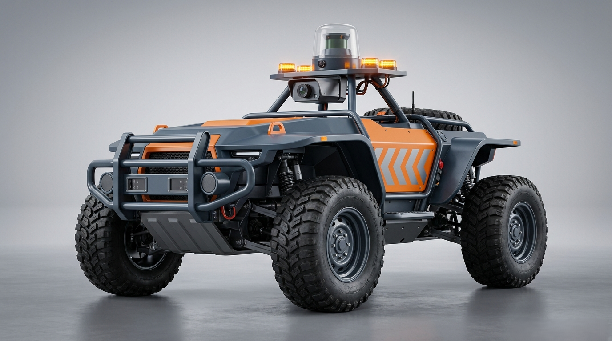

FogBot
Your eyes on the haul road, even when the fog isn’t.

What FogBot is
FogBot is an AI-guided pilot rover built to solve one of NMDC’s most persistent operational challenges: monsoon fog that cuts visibility on Bailadila’s haul roads to as little as 3–5 meters, costing the mine 50–60 operating days every year. Rather than retrofitting every dumper truck, FogBot drives ahead of each vehicle at a fixed distance, fusing LiDAR, computer vision, and proximity sensing to read the road in real time. When visibility drops, the system doesn’t just detect obstacles — it computes a live safety score, recommends a safe operating speed, and can broadcast an emergency stop before risk becomes danger.
The problem, in numbers
How FogBot works
-
1
Sense the road
LiDAR, CV camera, IR + ultrasonic proximity, and GPS build a live picture of the haul road ahead.
-
2
Know the risk
Sensor fusion and an AI risk score track camera confidence as a live proxy for fog density.
-
3
React instantly
Adaptive safe-speed recommendations and an automatic fail-safe stop respond before risk becomes danger.
-
4
Stay connected
Live telemetry streams to the command dashboard, so dispatchers see exactly what FogBot sees.
Why not just add sensors to the truck?
Bailadila already runs a driver-assist system mounted on the trucks themselves. FogBot takes a different approach: instead of asking a truck’s own degraded visibility to somehow see through fog, it puts dedicated sensing ahead of the vehicle — giving the driver a moving set of eyes rather than a better version of the same view.